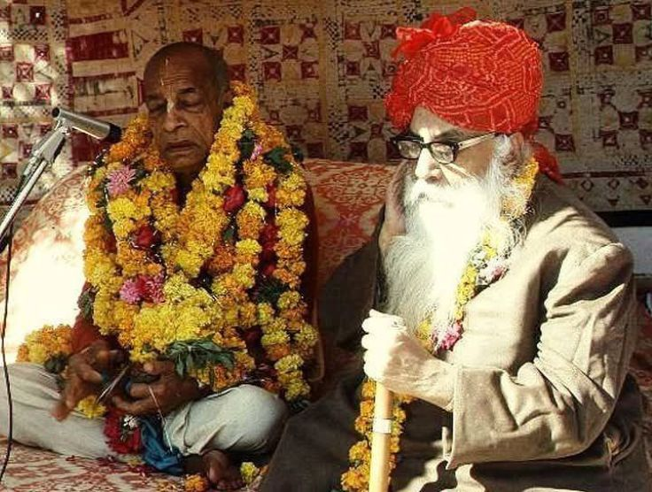

Prabhupada visits the Maharaja of Sanand

Both King Indra and Mahārāja Pṛthu were envious and angry with each other, but since both of them were Vaiṣṇavas, or servants of Lord Viṣṇu, it was their duty to adjust the cause of their envy. This is also a first-class example of cooperative behavior between Vaiṣṇavas. In the present days, however, because people are not Vaiṣṇavas, they fight perpetually among one another and are vanquished without finishing the mission of human life.
Reaching the outskirts of Sanand, we found a large group of people in an open field. They clamored excitedly around a small colorful stage erected for Śrīla Prabhupāda’s arrival. Śrīla Prabhupāda sat, serene and comfortable on a raised dais, wreathed in about twenty garlands of marigolds and roses. Our host, the portly and venerable king of Sanand, with his long white beard and wearing a large red turban, sat at his side. A chokidhar sheltered Prabhupāda from the sun with a large, red-velvet ceremonial umbrella.
Several hundred townspeople gathered in front of the stage. It was quite a sight. A group of costumed dancers, caparisoned in smart, white costumes with unusual pleats and ruffles and wearing bright yellow pagḍis, headbands with large side frills, performed a stick dance as a greeting ceremony. They then sat in rows at the front, while the townspeople, some dressed in white turbans and others in colorful purple ones, clustered behind to get a glimpse of their revered visitor.
The king’s son, Yuvrāj Ṭhākura Sahib, a short, pleasant man in his late forties, gave a brief introductory speech and welcoming address before requesting Prabhupāda to speak. Prabhupāda asked for his karatālas and then chanted the mahā-mantra for a few minutes. He then thanked our hosts and the audience for their warm reception.
The Yuvrāj then invited him to come down off the stage and mount an open horse-drawn carriage that was waiting to take him on a grand reception tour through the town. The carriage had seen better days but was still quite stately. By this time several thousand people had gathered, eager to greet Śrīla Prabhupāda. Their enthusiasm and veneration surcharged the atmosphere.
Hansadūta, Harikeśa, and I were swept up in the excitement. Harikeśa rushed about snapping photos for Back to Godhead magazine. Hansadūta went off with a mṛdaṅga to join Jaśomatīnandana and Haihaya in kīrtana at the front of the procession.
Śrīla Prabhupāda and the king climbed into the carriage, sitting opposite each other, Prabhupāda on the back seat. On Prabhupāda’s request I was privileged to ride on the back running board. Taking the colorful umbrella from the chokidhar’s grasp, I leaned over to provide a shield for His Divine Grace from the sun’s rays.
Then we were off on an hour-long ride that took us through the main parts of the town and up the central thoroughfare leading to Sanand Palace. It was wonderful. All along the route excited people clamored to get a glimpse of Śrīla Prabhupāda and his foreign disciples.
A large crowd preceded us, with several hundred women following behind. As the procession wound its way through the town, the ladies spontaneously burst into chanting, “Hare Kṛṣṇa, Hare Kṛṣṇa, Kṛṣṇa Kṛṣṇa, Hare Hare/ Hare Rāma, Hare Rāma, Rāma Rāma, Hare Hare” without any prompting from our devotees. Although I’ve read in Prabhupāda’s books that village people in India are naturally inclined to be devotees, to actually see it practically manifested was a moving experience.
Ref ~ Transcendental diary volume 1 (Dec 25th, 1975)